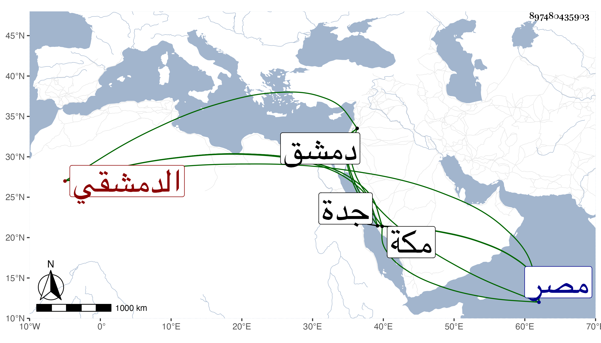

0902Sakhawi.DawLamic.ITO20230111-ara1.EIS1600.897480435903
Biography ID: 897480435903
920
علي بن عيسى نور الدين بن الخواجا الشرف القارئ الدمشقي شقيق محمد ويعرف كل منهما بابن القارئ ولد سنة ثلاث وستين وثمانمائة بدمشق وحفظ القرآن واشتغل قليلا وحج ولقيني بمكة بعد أن استجازني أخوه له ولبنيه التقي أبي بكر والشرف يحيى وسائر بناته في موسم سنة ست وتسعين وكان قدم مع الركب الشامي ليجاور فوجد المرسوم سبقه برجوعه لمصر ليكون مع أخيه في المصادرة لطف الله بهما ، ثم لقيني بمكة في سنة تسع وتسعين وقد قدمها في موسم التي قبلها وأقام هو وابن عمه الشمس محمد بن يوسف بجدة .
